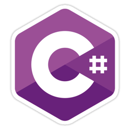

About me
Hi, I am Saverio Grisorio, but people call me Xavi. I’m a full stack
software developer, often on the go, and currently based in London.
I fell in love with software development when as a boy I found a
Commodore and a BASIC manual. Since then, I’ve been passionate about
building applications aimed at solving real world problems with a
preference for those that can have a positive social impact and
promote people’s well-being.
When I don’t code, I enjoy spending time with my soul mate, my son and
two sweet cats. We love the outdoors, good food, tv shows and video
games.
Recent projects
Unmind is a workplace mental health platform that empowers
organizations and employees to measurably improve their mental
wellbeing. Its learning and development platform features audio and
video learning material, tools to assess the mental wellbeing and
admin aggregated and anonymous data to improve the companies
decision-making.
As a full stack developer I helped Unmind in its initial stages
firstly building features and improving the platform performances, and
lately transitioning from the MVP to a more mature and robust product.
The main tech development areas I helped contribute to are:
Cloudbased web app: from Angular 1.x to React, hosted
on AWS
Hybrid mobile app built in React Native
GraphQL.js API
Serverless Lambda in NodeJs
Database development with SQL Server, MySQL and
DynamoDB
Chatbot flows powered by Meya.ai
Sangha is a mobile app to support the daily practice of
Nichiren Daishonin’s Buddhism. It contains an essential toolkit that
includes a digital and interactive liturgy booklet, a timer to monitor
and log your meditation practice, a calendar to save your Buddhist
events and be reminded about important dates, and a daily
encouragement.
I devised Sangha in all of its aspects, from ideation, to designs and
code. It is a hybrid mobile app (iOS and Android) built with the
Ionic Framework v1.x, AngularJS v.1, HTML 5 and
CSS. Although not officially supported anymore, it still
collects downloads and good reviews.
Ehouse is a technology led property marketing agency, helping market
thousands of property each year across the UK. It does that featuring
professional photography and videos, floor plans and providing a
platform for property agents to manage appointments and orders.
The products I helped ehouse support are:
The internal portals (for agents, photographers and suppliers), a
suite of web apps that allow agents to see their listed properties
and order marketing services, photographers to manage appointments
and suppliers to organize their workflow.
Built with C# .NET 4.5, MVC 5, SQL Server 2016 and
jQuery.
Data management application for the internal staff, a legacy app
built with VB6 and connected to a SQL Server database.
The main website, powered by custom templates in Wordpress.
A new invoicing system to manage outstanding invoices, sending email
reminders and much more with .NET Core 2.0, the
Xero API, Mailjet and SQL server.
... and much more on
